|
TORTUGAS ACU�TICAS M�S COMUNES:
Graptemys sp., Pseudemys sp. y Trachemys sp.
Jonathan Gonz�lez, 2007
En el presente art�culo vamos a tratar
las especies de tortugas acu�ticas norteamericanas m�s comercializadas
actualmente. A�os atr�s la gran mayor�a de tortugas acu�ticas que
encontr�bamos en los comercios eran neonatos de la tan conocida
�Orejas rojas� Trachemys scripta elegans, pero tras la prohibici�n de
esta especie en la comunidad europea, han aparecido en el mercado
otras especies de tortugas acu�ticas.
Las m�s comunes son la tortuga mapa (Graptemys pseudogeographica),
tortuga de orejas amarillas (Trachemys scripta scripta), tortuga
jerogl�fico (Pseudemys concinna) y tortuga de Nelson (Pseudemys
nelsoni).
Todas estas tortugas son criadas en granjas estadounidenses y son muy
comunes los h�bridos entre Trachemys scripta scripta y Trachemys
scripta elegans, y Graptemys p. pseudogeographica y Graptemys p.
kohnii.
Adem�s de estas especies, tambi�n se est�n importando recientemente
ejemplares de Pseudemys floridana, Chrysemys picta spp.
Trachemys
scripta emolli, y otras.
Graptemys pseudogeographica (Gray, 1831)
Tortuga Falsa Mapa (G. p. pseudogeographica).
Tortuga Mapa o del Mississippi (G. p. kohnii)
Caracter�sticas
El espaldar llega a alcanzar hasta los 25 cm. de longitud en las
hembras, y solamente 15 cm. en los machos adultos. Es de color marr�n
oscuro surcado por unos c�rculos poco marcados de color algo m�s claro
que el color de fondo del espaldar. La quilla longitudinal est� poco
marcada y �nicamente muestra un colorido pardo oscuro. El borde
posterior del espaldar es muy aserrado, especialmente en los
ejemplares j�venes.
El plastr�n en los j�venes es de color verde oliva claro y muestra un
dibujo de color verde oscuro con numerosas ramificaciones que ocupa
casi totalmente el plastr�n. A medida que el animal crece, el plastr�n
se torna de color marr�n claro y desaparecen los dibujos.
Las extremidades son de color verde oliva con unas l�neas difuminadas
de color amarillo. Las membranas interdigitales acaban en poderosas
u�as de longitud considerable.
La cabeza es de color verde oliva y est� surcada por l�neas de color
amarillo.
La diferencia entre las 2 subespecies se encuentra cerca y dentro de
los ojos. En G. p. pseudogeographica la l�nea que surca la parte
posterior del ojo es algo m�s ancha y finaliza justo a la altura de
los ojos. El iris de est� subespecie es de color amarronado y est�
dividido por una l�nea horizontal de color oscuro.
En G. p. kohnii la l�nea nace en la parte superior del ojo y discurre
por el contorno de �ste hasta acabar en la parte inferior. Est� l�nea
no se encuentra entrecortada en los ejemplares puros.
A�n as�, en algunas observaciones realizadas en poblaciones del r�o
Mississippi a su paso por Winona (Minessota) se encontr� que en huevos
correspondientes a una misma puesta algunos ejemplares nac�an con el
patr�n de las l�neas de la cabeza correspondiente a G. p. pseudogeographica y otros a
G. p. kohnii. A temperaturas de incubaci�n
de 25� C, las cr�as mostraban el patr�n de las l�neas de la cabeza de
G. p. kohnii, mientras que a 30� C la gran mayor�a mostraba el patr�n
de G. p. pseudogeographica. (Ewert, 1979). Vogt (1980) tambi�n cita
diferencias en el patr�n de las l�neas de la cabeza seg�n la
temperatura de incubaci�n de los huevos.
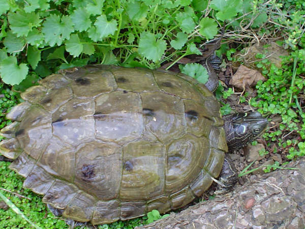
1. Espaldar de G. p. pseudogeographica (Enric P�mies).
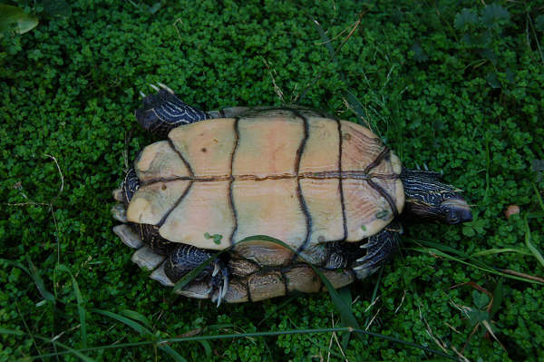
2. Plastr�n de G. p. pseudogeographica
(Enric P�mies).
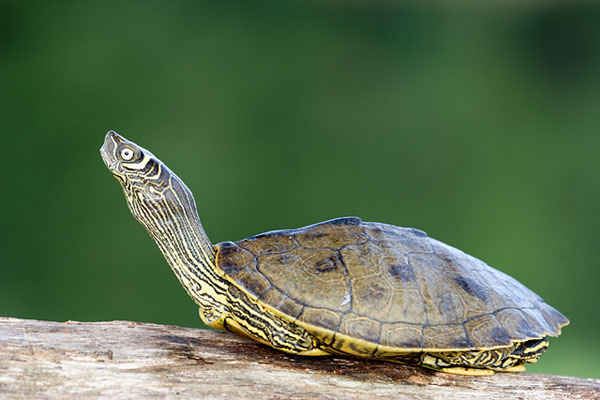
3. G. p. kohnii
(Michael Cravens,
http://michaelcravens.com/)
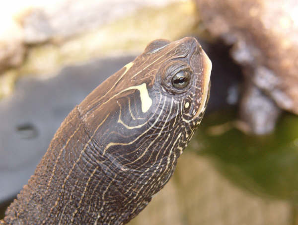
4. Detalle de la cabeza de Graptemys p. pseudogeographica
(Jonathan Gonz�lez).
Distribuci�n
G. p. pseudogeographica: Habita en el curso alto del Mississippi (Minesota),
cuenca del r�o Missouri (Dakota del Norte y Dakota del Sur), oeste de
Tennessee hasta el centro de Ohio.
G. p. kohnii habita la cuenca del r�o Mississippi a su paso por
Louisiana, Arkansas, Missouri, pasando por el este de Kansas, Oklahoma
y Texas
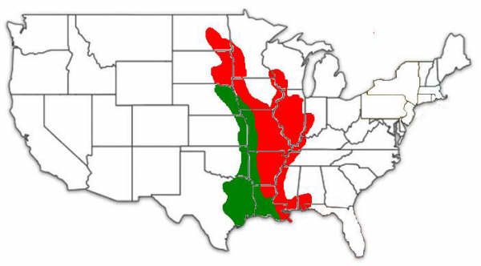
Rojo: Graptemys pseudogeographica pseudogeographica
Verde: Graptemys pseudogeographica kohnii
Biolog�a
Es una tortuga habitante de zonas acu�ticas y r�os de corriente lenta,
donde crece con abundancia la vegetaci�n. Son tortugas que disfrutan
mucho tomando el sol, aunque siempre hay ejemplares m�s t�midos que
optan por permanecer escondidos entre la vegetaci�n.
La alimentaci�n se basa en moluscos, larvas, insectos, peque�os peces,
etc. �nicamente los ejemplares adultos optan por a�adir a su dieta
algo de comida de origen vegetal.
En cautividad, las temperaturas �ptimas para las 2 subespecies est�n
situadas alrededor de los 28� C. G. p. kohnii es m�s resistente a
temperaturas bajas, pudiendo soportar temperaturas de 5�C. La forma
nominal requiere m�s temperatura y no son aconsejables los descensos
de la temperatura por debajo de los 17� C.
En estado silvestre la hibernaci�n comienza durante el mes de
noviembre. Las tortugas aprovechan las madrigueras subterr�neas
fabricadas por peque�os mam�feros para hibernar. Las bajadas del cauce
del r�o durante el invierno provocan que muchos ejemplares que se
encuentran hibernando en estas grutas mueran congelados en los
inviernos m�s duros.
Las puestas de la G. p. pseudogeographica se llevan a cabo desde
finales de junio y mediados de julio. Las G. p. kohnii, en cambio
realizan las puestas �nicamente en el mes de junio.
Las hembras pueden realizar de 2 a 3 puestas por temporada.
En G. p. pseudogeographica, est�s suelen ser de 2 a 22 huevos.
Normalmente est�s son de 15 huevos, siendo las puestas m�s numerosas
las realizadas por las hembras de mayor tama�o.
La G. p. kohnii suele hacer unas puestas menos productivas; de 2 a 8
huevos.
|
|
G. p. pseudogeographica |
G. p. kohnii |
|
Largo |
32.3 � 37.4 mm. |
35 � 41 mm. |
|
Ancho |
17.9 � 24.7 mm. |
20.7 � 26.2 mm. |
|
Peso |
8.9 � 11.2 g |
6 � 9 g |
Tama�o de los huevos de Graptemys pseudogeographica (Dundee & Rosean,
1989)
Pseudemys nelsoni (Carr, 1938)
Tortuga de vientre rojo.
Caracter�sticas
El caparaz�n puede llegar a alcanzar en las hembras adultas los 35 cm.
Mientras que los machos no suelen superar los 23 cm.
La librea del caparaz�n es muy variable seg�n la edad del animal. Los
ejemplares j�venes muestran manchas irregulares de color verde oliva
sobre un fondo muy variable que va desde el amarillo hasta tonos
anaranjados y rojizos.
En los ejemplares m�s longevos este va oscureciendo y las manchas
irregulares de color anaranjado empalidecen y se difuminan,
predominando en el caparaz�n el color pardo oscuro que en algunos
ejemplares puede llegar a convertirse en negro.
El plastr�n puede ser tanto de color amarillo como naranja e incluso
rojizo. Este empalidece con la edad y las manchas negruzcas que
presenta en estado juvenil van desapareciendo a medida que el animal
crece.
Las extremidades y la cabeza son de color verde oliva, con unas l�neas
delgadas de color amarillo que van aumentando de grosor cuando
alcanzan la cabeza. Las extremidades anteriores poseen unas u�as
bastante afiladas, muy desarrolladas en los machos. Las posteriores
est�n dotadas de membranas interdigitales que facilitan la nataci�n de
la tortuga.
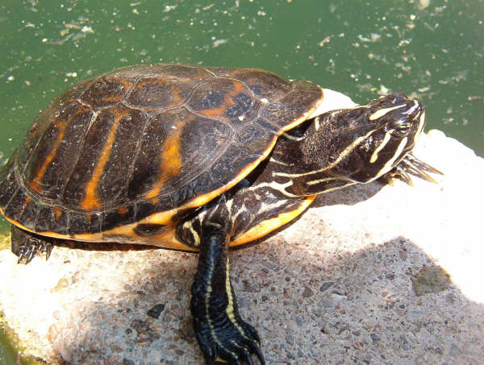
6. Ejemplar macho de Pseudemys
nelsoni (Jonathan Gonz�lez).
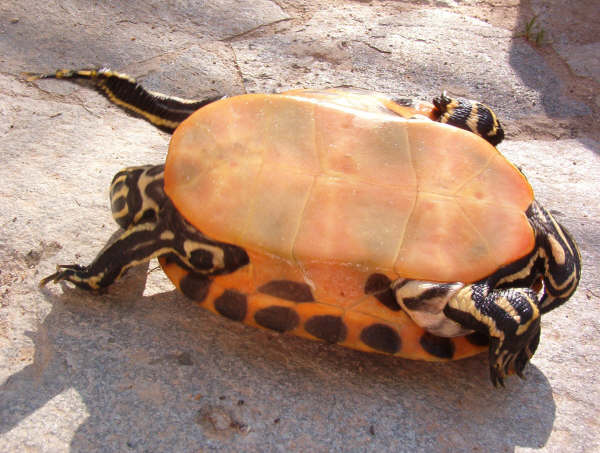
7. Plastr�n de Pseudemys
nelsoni (Jonathan Gonz�lez).
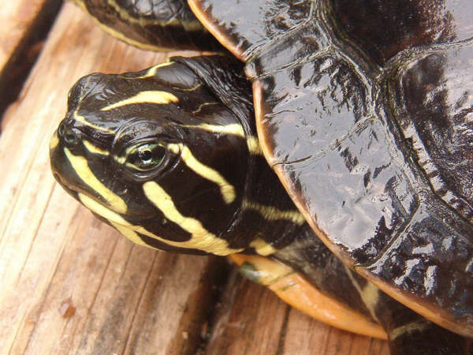
8. Detalle de la cabeza de
Pseudemys nelsoni (Jonathan Gonz�lez).
Distribuci�n
Habita en la pen�nsula de Florida, siendo muy numerosa en los
Everglades. Tambi�n se la puede encontrar en el sur del Estado de
Georgia.
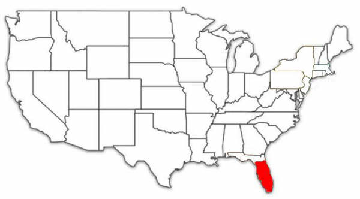
H�bitos
Esta tortuga habita en charcas, lagos, acequias, cenagales, y cursos
de agua de corriente lenta con abundante vegetaci�n.
Es una tortuga de h�bitos diurnos, pero se muestra predominantemente
activa a primera hora del d�a y �ltima de la tarde. Gran parte del d�a
lo pasa encaramada a alguna rama que pueda sobresalir del agua, siendo
aprovechada para el asoleamiento
Su dieta consiste b�sicamente en alimento de origen vegetal,
especialmente en los ejemplares adultos, aunque tambi�n come peque�os
invertebrados, moluscos etc.
Las hembras pueden llegar a realizar de tres a 6 puestas por a�o, de 6
a 30 huevos cada una, dependiendo del tama�o de la hembra. El tama�o
de los huevos var�a entre los 33-43 X 22-30 mm y eclosionan entre los
65-70 d�as. Los huevos incubados artificialmente a una temperatura de
30� C eclosionan pasados los 50 d�as.
Las hembras suelen aprovechar las tierras blandas de los nidos de
aligatores (Alligator mississipiensis) para realizar sus puestas. En
el norte de Florida del 33 al 44% de nidos de aligator conten�an
huevos de Pseudemys nelsoni (Dietz & Jackson, 1979), mientras que en
la zona de los Everglades la proporci�n es del 18 al 20% (Kushlan &
Kushlan, 1980)
Pseudemys concinna (LeConte, 1890)
Tortuga Jerogl�fica.
Caracter�sticas
El caparaz�n puede llegar a alcanzar los 35 cm mientras que los machos
rara vez superan los 20 cm. �ste es bastante aplanado y de color verde
oscuro. Presenta unas l�neas conc�ntricas que seg�n el ejemplar pueden
variar desde un tono amarillo claro a tonos anaranjados.
A medida que el animal crece las l�neas del caparaz�n van
desapareciendo por completo y el caparaz�n adopta un color verde
oscuro que aumenta con la edad.
El plastr�n puede ser de color amarillo o anaranjado y presenta unas
manchas negras de tama�o variable que empalidecen a medida que el
animal crece, al igual que el colorido general del plastr�n.
Las extremidades y la cabeza son de color verde oliva, muy similar al
tono del caparaz�n. �stas muestran unas l�neas longitudinales
paralelas de color amarillo.
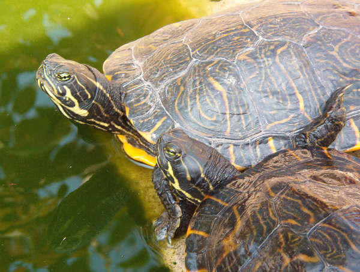
10. Ejemplares de Pseudemys
concinna asoleandose (Jonathan Gonz�lez).
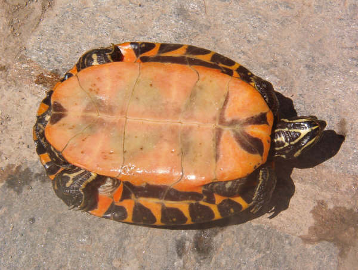
11. Plastr�n de Pseudemys
concinna (Jonathan Gonz�lez).
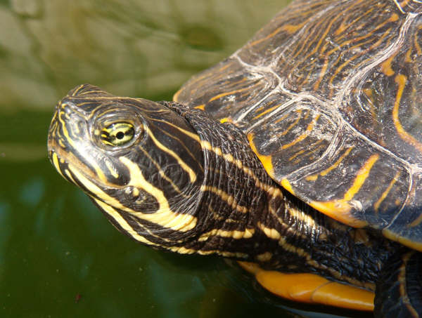
12. Detalle de la cabeza de
Pseudemys concinna (Jonathan Gonz�lez).
Distribuci�n
Existen varias subespecies de P. concinna, las cuales est�n repartidas
por gran parte de los Estados Unidos.
P. concinna concinna: Es la que dispone de mayor �rea de distribuci�n,
que abarca Texas, Oklahoma, Kansas, Arkansas, Louisiana, Mississipi,
Alabama, Tennessee, Georgia, parte de Florida, Virginia, Carolina del
Norte y Carolina del Sur.
P. concinna hieroglyphica: Su distribuci�n se localiza en los estados
de Illinois, Texas, Oklahoma y Kansas. Es la subespecie m�s vendida.
P. concinna metteri: Habita en los estados norteamericanos de Texas,
Missouri, Illinois, Arkansas, Alabama, Mississippi, Louisiana, Kansas.
P. concinna mobilensis: Su franja de distribuci�n se localiza desde
Texas hasta la pen�nsula de Florida.
P. concinna suwaniensis: �nicamente habita en una peque�a zona en el
oeste de la pen�nsula de Florida.
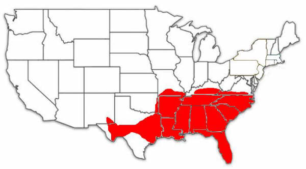
H�bitos
La Pseudemys concinna habita r�os de corriente lenta con abundante
vegetaci�n acu�tica y fondos rocosos. Suele utilizar los troncos que
sobresalen del agua como zona de asoleamiento.
La gran parte de sus poblaciones est�n activas desde abril a octubre.
Las poblaciones de las zonas m�s sure�as permanecen activas durante
todo el a�o.
Suelen estar activas a primera hora de la ma�ana y ultima hora del
d�a. El resto del tiempo lo pasan escondidas entre la vegetaci�n
acu�tica.
Las hembras, llevan a cabo las puestas durante los meses de Mayo y
Julio, dependiendo del lugar de procedencia de la tortuga. En las
poblaciones del sur de Georgia y del sur de Carolina, las tortugas
comienzan las puestas durante los meses de mayo y junio (Carr, 1952).
En Alabama las puestas se realizan durante los meses de junio y julio
(Thomas & Mont, 1973). Las poblaciones m�s norte�as �nicamente
realizan una puesta en el mes de Junio.
Las puestas son de un n�mero variable de huevos de 5 a 20 dependiendo
del tama�o de la hembra. Tienen forma el�ptica y su tama�o es de 29mm
a 44mm X 22mm a 30mm. Pesan de 16 a 22 gramos (Jackson & Jackson,
1968).
Los nacimientos comienzan al cabo de 80 a 150 d�as, dependiendo de la
zona de procedencia del animal. Las poblaciones m�s norte�as de la
especie, permanecen en el nido, hibernando hasta la primavera
siguiente.
Trachemys scripta (Schoepff, 1792)
Tortuga de orejas rojas o Japonesa (T. s. elegans)
Tortuga de orejas amarillas (T. s. scripta)
Existen muchas subespecies de Trachemys scripta. �nicamente me voy a
centrar en las 3 subespecies m�s com�nmente criadas en las granjas de
Estados Unidos y las que podemos encontrar com�nmente en los
comercios. Estas son la Trachemys scripta scripta, Trachemys scripta
elegans y Trachemys scripta troosti. Ocasionalmente son importados
ejemplares de T. scripta emolli, T. scripta ornata, T. s. callirostris,
pero en n�meros muy reducidos.
Caracter�sticas
El caparaz�n puede llegar a alcanzar los 30cm. de longitud. Los
ejemplares m�s grandes son los de la subespecie T. s. scripta, que
alcanzan con frecuencia estas dimensiones. T. s. elegans y T. s. troosti, en raras ocasiones rebasan los 25cm. de
espaldar.
Este es de color verde intenso en los ejemplares j�venes y a medida
que el animal crece adopta un color amarronado, que se oscurece a
medida que el animal envejece. Tambi�n presenta unas l�neas de
diferente anchura de color amarillo, muy variables en intensidad y
medida de un ejemplar a otro. Algunas franjas negras y algo m�s
difuminadas tambi�n est�n presentes en el caparaz�n de esta especie.
La subespecie T. s. scripta presenta unos rasgos en el color del
caparaz�n m�s oscuros que en las otras dos subespecies. En los
ejemplares m�s adultos el caparaz�n se torna totalmente de color negro
y desaparecen las l�neas amarillas, muy marcadas en ejemplares
juveniles.
El plastr�n es de color amarillo en las tres subespecies, y muestra
unas manchas conc�ntricas de color verde oscuro, que se van
difuminando a medida que el animal crece. En T .s. scripta estas
manchas son menos numerosas y en ocasiones inexistentes. La subespecie
T. s. troosti es de caracter�sticas intermedias entre T. s. scripta y
T. s. elegans.
La cabeza es de color muy similar al del caparaz�n y presenta unas
l�neas de diferente grosor de color amarillo o verde claro. La
subespecie T. s. elegans tiene una mancha de color rojo intenso justo
detr�s de cada ojo. Es por ello que es conocida como �tortuga de
orejas rojas�.La forma nominal T. s. scripta muestra una de estas
manchas, aunque en este caso unidas a las l�neas a la cabeza, y de un
color amarillo intenso. Esta mancha amarilla se va difuminando a
medida que el animal crece y en los ejemplares m�s longevos llega
incluso a desaparecer.
La subespecie T. s. troosti presenta tambi�n caracter�sticas
intermedias, mostrando una mancha algo m�s difuminada y de un color
anaranjado.
Las extremidades son muy poderosas y en las 3 subespecies son de color
verde oscuro y muestra unas l�neas amarillas de diferente grosor.
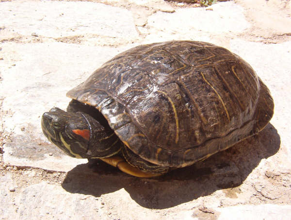
14. Espaldar de Trachemys scripta elegans (Jonathan
Gonz�lez).
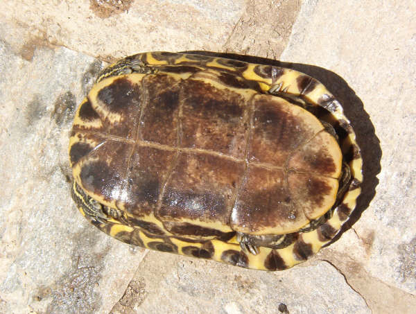
15. Plastr�n de Trachemys scripta elegans (Jonathan
Gonz�lez).
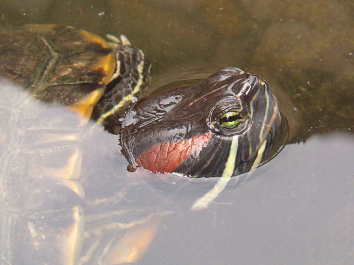
16. Detalle de la cabeza de Trachemys scripta elegans
(Jonathan Gonz�lez).
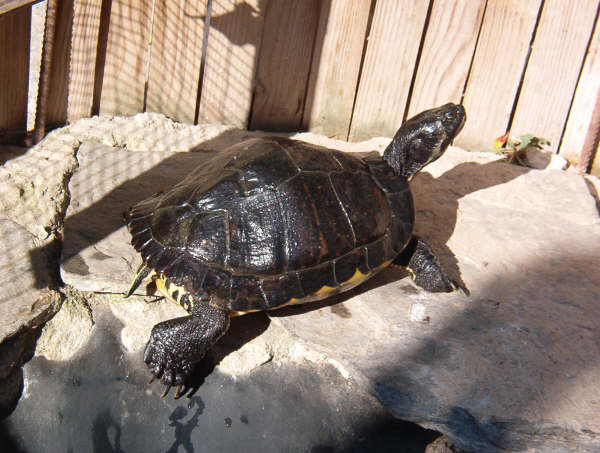
17. Espaldar de Trachemys scripta scripta (Jonathan
Gonz�lez).
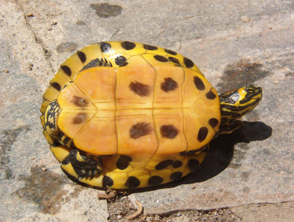
18. Plastr�n de Trachemys scripta scripta (Jonathan
Gonz�lez).
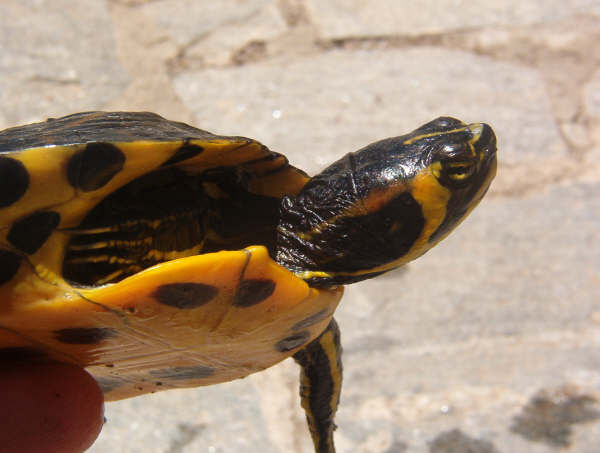
19. Detalle de la cabeza de
Trachemys scripta scripta (Jonathan Gonz�lez).
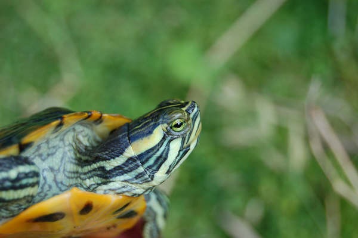
20. Detalle de la cabeza de
Trachemys scripta troosti (Enric P�mies).
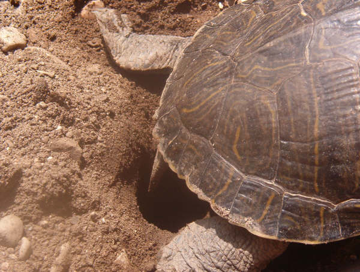
21. Hembra realizando nido (Jonathan Gonz�lez).
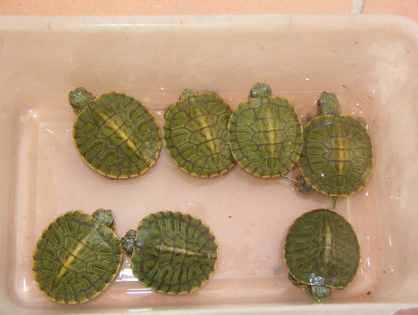
22. Juveniles de Trachemys scripta elegans (Jonathan
Gonz�lez).
Distribuci�n
T. scripta scripta: Habita en los estados de Virginia, Carolina del
Norte, Florida, Carolina del Sur y Georgia
T. scripta elegans: Su distribuci�n abarca los estados de Texas,
Oklahoma, Nuevo M�xico, Kansas, Kentucky, Indiana, Alabama y Tennessee,
Arkansas, Illinois y Missouri.
T. scripta troosti: Habita en los estados de Tennessee y Kentucky.
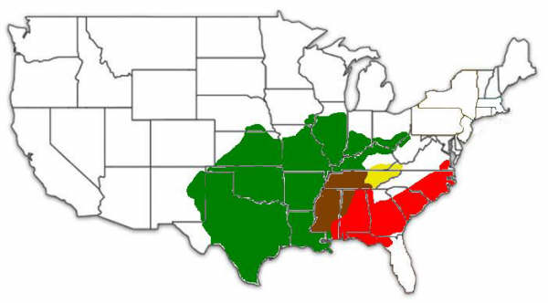
Rojo: Trachemys scripta scripta
Verde: Trachemys scripta elegans
Amarillo: Trachemys scripta troosti
Marr�n: Zona de hibridaci�n natural T.s.scripta y T.s.elegans
Biolog�a
Esta tortuga habita en muchos ecosistemas de agua dulce. Desde
peque�os cursos fluviales, a pantanos, zonas acu�ticas de corriente
lenta con abundante vegetaci�n, ci�nagas, acequias, etc.
La alimentaci�n se basa en peque�os moluscos, peces, cangrejos, y
dem�s invertebrados. Son unas tortugas muy voraces y bastante
agresivas, por lo que tambi�n son capaces de cazar peque�os mam�feros
y aves. Ocasionalmente tambi�n a�aden a su dieta algo de materia
vegetal.
Suelen estar activas durante gran parte del d�a y se las puede
encontrar en grandes grupos asole�ndose en la orilla o en los troncos
que sobresalen del agua.
Las hembras pueden llegar a realizar 3 puestas, aunque lo m�s normal
son 2 puestas de entre 5 y 15 huevos cada una. �stos eclosionan entre
los 65-75 d�as, y el tama�o var�a entre 30-40 X 20-30 mm. En esa �poca
las hembras son capaces de recorrer m�s de kil�metro y medio en busca
de un buen lugar donde realizar el nido.
El tiempo de incubaci�n var�a seg�n la temperatura a la que son
incubados los huevos:
|
TEMPERATURA |
TIEMPO
INCUBACION |
|
-25� C |
112 d�as |
|
25� C � 25.5� C |
93 � 100 d�as |
|
25� C � 30� C |
69 d�as |
|
29.5� C � 30� C |
60 d�as |
(Ewert, 1979)
Los reci�n nacidos miden de 25.4-35.8 mm de largo. 25.4-34.2 mm de
ancho. 13.5-18.4 mm de alto. Y de 4.4 � 10 g. de peso (Cagle, 1950)
En Elington Bay, en el sur de Carolina, se realizaron una serie de
estudios entre 1976 y 1987 referentes a la �poca de puestas de las
tortugas. En abril se realizaron el 7% de las puestas. En Mayo el 52%.
En junio el 37% y en Julio tan solo el 4%. (Gibbons & Greene, 1990)
Seg�n a la temperatura que se incuben los huevos, estos tender�n a
producir m�s machos o m�s hembras. Los huevos incubados a temperaturas
entre los 22 y 25� C producir�n un 100% de machos, mientras que los
incubados a 30� C, producir�n �nicamente hembras (Ewert & Nelson,
1991)
BIBLIOGRAF�A
CAGLE, 1950. The life history of the slider turtle, Pseudemys scripta
troostii (Holbrook).Ecol.Monogr.20:31-54.
CARR, 1952 Handbook of turtles. The turtles of the United States,
Canada, and Baja California.Compstock Publ.Assoc. Cornell University
Press, Ithaca, N.York. 542 pp.
CHRISTIANSEN & BICKHAM, 1989. Possible historic effects of pond
drying and winter kill on the behavior of Kinosternon Flavescens and
Chrisemys Picta. J. Herpetol. 23:91-94
DUNDEE & ROSSMAN, 1989. The amphibians and
reptiles of Louisiana. Louisiana state University Press, Baton
Rouge.300pp.
EWERT, 1979�. The embryo and its egg: development and natural history.
In Harless, M, and H. Morlock. eds. Turtles: Perspectives and Research,
333-413. John Wiley & Sons, N.York.
EWERT & NELSON, 1991. Sex determination in turtles: Diverse patterns
and some possible adaptive values. Copeia 1991:50-69
INFOTORTUGA.COM.: Portal especializado en Tortugas.
www.infotortuga.com
GIBBONS & GREENE, 1990 Reproduction in the slider and other species of
turtles. In Gibbons, J.W. ed. Life history and ecology of the slider
turtle, 124-134.Smithsonian Institution Press, Washington, D.C.
JACKSON & JACKSON, 1968 The egg and hatchling of the Suwannee terrapin.
Quart. J. Florida Acad. Sci. 31:199-204
KUSHLAN & KUSHLAN, 1980 Everglades alligator nests: Nesting sites for
marsh reptiles. Copeia 1980: 930-932.
THOMAS & MOUNT, 1973 The annual cycle of reproduction of the turtle ,
Pseudemys Floridana Floridana (Testudinata, Testudinidae) with
observations on its ecology. ASB Bull. 20:87.
|